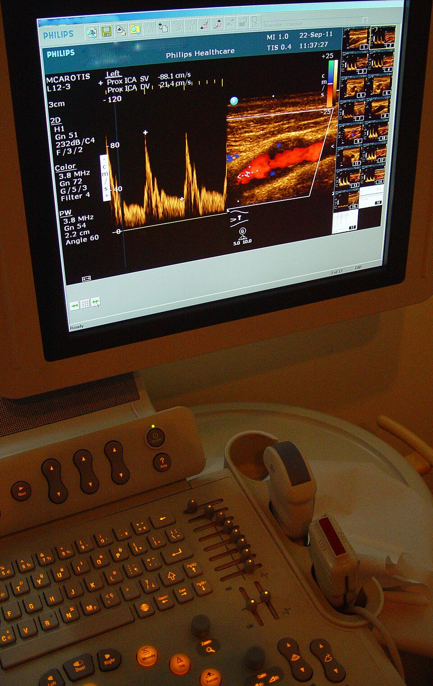
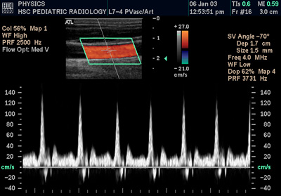
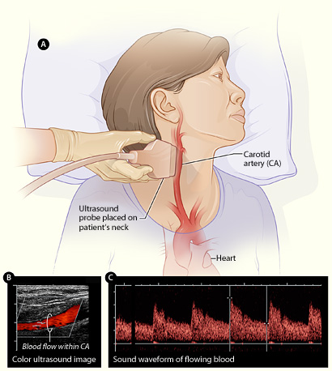
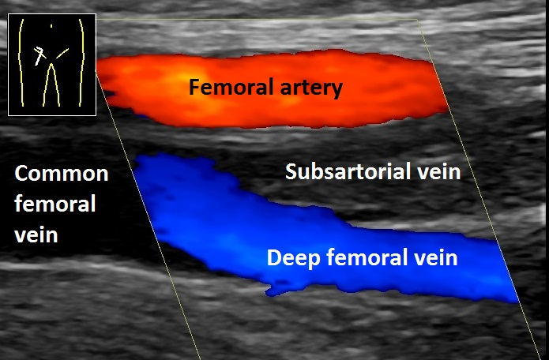

Ultrasound allows us to see structures inside the body using sound waves. But sometimes, looking at anatomy alone is not enough. We also need to understand how blood is moving through blood vessels.
This is where Doppler ultrasound becomes useful.
Doppler ultrasound is a technique that evaluates blood flow by detecting changes in sound waves reflected from moving blood cells. It helps assess the direction and speed of blood flow through arteries, veins, and other parts of the circulatory system.
In this article, we'll explore how Doppler ultrasound works and why it is an important part of medical imaging.
What Is Doppler Ultrasound?
Doppler ultrasound is a specialized ultrasound technique that uses the Doppler effect to assess the movement of blood, particularly red blood cells, within blood vessels.
A conventional ultrasound examination primarily provides images of anatomical structures, such as organs, tissues, and blood vessels. Doppler adds information about blood movement that cannot be obtained from a conventional grayscale image alone.
It can help assess:
- Direction of blood flow
- Velocity of blood flow
- Changes in blood flow associated with narrowing or obstruction
- Blood supply to organs and tissues
Doppler can be performed alongside conventional ultrasound, allowing anatomical information and blood-flow information to be assessed during the same examination.

The Basic Principle: The Doppler Effect
To understand how Doppler ultrasound works, we first need to understand the Doppler effect.
The Doppler effect means that the frequency of a wave changes when there is movement between the source of the wave and the person receiving it.
A simple example is an ambulance siren.
- When the ambulance comes toward you: the siren sounds higher.
- When the ambulance moves away: the siren sounds lower.
This happens because the movement of the ambulance changes the frequency of the sound waves reaching your ears.
Doppler ultrasound uses a similar principle, but instead of an ambulance, we are interested in moving red blood cells.
The ultrasound transducer sends sound waves into the body. These waves interact with moving blood cells and return to the transducer as echoes.
Because the blood cells are moving, the frequency of the returning echoes can be different from the frequency of the transmitted sound waves.
How Does Doppler Ultrasound Work?
Step 1 — The transducer sends sound waves
The ultrasound transducer sends high-frequency sound waves into the body.
Step 2 — The waves interact with moving blood
The sound waves interact with moving blood cells. Some of the sound energy is reflected back toward the transducer.
Step 3 — The system detects a frequency shift
The system compares the returning echoes with the transmitted sound waves.
A positive or negative frequency shift can indicate motion relative to the ultrasound beam, while the magnitude of the shift is related to the velocity of blood flow.
However, the measurement also depends on the angle between the ultrasound beam and the direction of blood flow.
Step 4 — The computer displays the blood-flow information
Depending on the Doppler technique being used, the system can display blood-flow information in different ways:
- Color Doppler → displays flow information as colors
- Spectral Doppler → displays velocity as a waveform
- Power Doppler → displays the strength of Doppler signals
This allows the examiner to assess blood flow in addition to the grayscale anatomy seen on conventional ultrasound.
What Information Does Doppler Ultrasound Provide?
1. Direction of Blood Flow
Doppler can show whether blood is moving toward or away from the transducer.
A commonly used color map is known as BART:
Blue → Away
Red → Toward
BART stands for Blue Away, Red Toward.
However, red does not automatically mean artery and blue does not automatically mean vein. The colors show the direction of flow relative to the transducer, not the type of blood vessel.
The color map can also be changed on the ultrasound system, so the examiner should always check the color scale displayed on the screen.
2. Blood-Flow Velocity
Doppler can help estimate how fast blood is moving.
Velocity is commonly expressed in cm/s or m/s.
Doppler can identify changes in velocity, such as increased velocity through a narrowed blood vessel.
The measured velocity is affected by the Doppler angle, so the ultrasound beam must be positioned appropriately.
3. Flow Patterns
Blood velocity changes during the cardiac cycle because the heart contracts and relaxes.
Spectral Doppler can display these changes as a waveform over time.
Measurements such as peak systolic velocity (PSV) can be obtained from the waveform.
Normal waveform patterns differ between vessels, so measurements should be interpreted according to the vessel being examined, the scanning protocol, and the clinical situation.
Main Types of Doppler Ultrasound
1. Color Doppler
Color Doppler displays blood-flow information as colors superimposed on the grayscale ultrasound image.
It can help assess:
- Direction of flow relative to the transducer
- Distribution of blood flow within a vessel
- Areas of abnormal or disturbed flow
Remember that the colors are measurements of flow information. They do not automatically identify a vessel as an artery or vein.
2. Power Doppler
Power Doppler displays the strength of Doppler signals rather than their direction or velocity.
It is generally more sensitive than conventional Color Doppler for detecting weak or slow blood flow, depending on the equipment and settings being used.
Its main limitation is that it does not provide reliable directional information like Color Doppler.
3. Spectral Doppler
Spectral Doppler displays blood-flow velocity as a graph over time.
The horizontal axis generally represents time, while the vertical axis represents velocity.
There are two important types of Spectral Doppler:
Pulsed-Wave Doppler (PW)
PW Doppler sends short pulses of ultrasound and allows the examiner to choose where the measurement is taken.
A small sample gate can be placed at a specific location inside the vessel, allowing the system to measure flow at a particular depth.
The limitation is that very high velocities can exceed the sampling limit and produce aliasing.
Continuous-Wave Doppler (CW)
CW Doppler continuously sends and receives ultrasound signals. It is useful for measuring very high velocities because it does not have the same pulsed-wave aliasing limitation.
However, CW Doppler receives signals along the ultrasound beam, so it cannot identify the exact depth from which a particular high-velocity signal originated.
PW Doppler: “I can tell you where the blood-flow measurement is coming from, but very high velocities can cause aliasing.”
CW Doppler: “I can measure very high velocities, but I cannot tell you the exact depth where that velocity occurred.”
Spectral Doppler is commonly used in vascular ultrasound and echocardiography.

4. Duplex Ultrasound
Duplex ultrasound combines grayscale imaging and Doppler in the same examination.
This means the examiner can see the structure of a blood vessel on the grayscale image while also assessing blood flow with Doppler.
If spectral Doppler is also included, the examination is often called a triplex ultrasound or triplex study. Terminology can vary between hospitals and clinical settings.

What Is the Doppler Angle and Why Does It Matter?
The Doppler angle is the angle between the ultrasound beam and the direction in which blood is flowing.
This angle is important because Doppler ultrasound uses the change in frequency of the returning sound waves to estimate how fast blood is moving.
If the ultrasound beam is positioned at a suitable angle to the blood flow, the machine can make a more reliable estimate of blood velocity.
In vascular ultrasound, examiners commonly use an angle of 60° or less when measuring blood velocity with angle correction.
An incorrect angle can make the measured velocity inaccurate.
To obtain a reliable measurement, the examiner needs to:
- Identify the correct blood vessel
- Position the Doppler sample correctly inside the vessel
- Align the ultrasound beam appropriately with the direction of flow
- Apply the correct angle correction
- Follow the appropriate scanning protocol
What Is Aliasing in Doppler?
Aliasing is a limitation that can occur particularly with PW Doppler and Color Doppler when the Doppler frequency shift is too high for the system to sample correctly.
In simple terms, the machine cannot accurately represent a very high velocity, so the displayed velocity can appear incorrectly.
In Color Doppler, aliasing may appear as a sudden change or mixture of colors, even though the blood has not actually changed direction.
Clinical Applications of Doppler Ultrasound
Vascular Ultrasound
Doppler is widely used to examine blood vessels in areas such as the neck, arms, and legs.
It can help assess blood flow and identify changes associated with narrowing, obstruction, or other vascular abnormalities.
Venous ultrasound can also be used to evaluate blood flow and investigate possible clots in deep veins. Assessment of suspected deep vein thrombosis usually combines Doppler information with other ultrasound findings, including vein compression.
Carotid Doppler
The carotid arteries supply blood to the brain. Carotid ultrasound commonly includes Doppler to assess blood flow and characteristics associated with narrowing of these arteries.
These findings can contribute to the assessment of conditions related to stroke risk, together with the patient's clinical information and other investigations.
Cardiac Doppler
Doppler is an important part of echocardiography. It can assess blood flow through the heart chambers and across the heart valves.
This helps evaluate abnormal flow patterns and conditions involving the heart valves.
Obstetric Doppler
In pregnancy, Doppler may be used when clinically indicated to assess blood flow in the fetus and placenta.
For example, Doppler measurements can be obtained from vessels such as the umbilical artery.
These measurements are interpreted together with other ultrasound findings and the clinical situation.
Organ and Transplant Imaging
Doppler can also be used to assess blood supply to organs, including transplanted organs.
It can help evaluate whether blood is reaching the organ and whether there are abnormalities in the vessels or blood flow.

Doppler vs Conventional Ultrasound
Conventional grayscale ultrasound and Doppler ultrasound are not completely separate imaging technologies.
Doppler is a specialized technique that can be integrated with conventional ultrasound to provide additional information about movement, particularly blood flow.
| Feature | Conventional Ultrasound | Doppler Ultrasound |
|---|---|---|
| Main purpose | Shows anatomy and tissue structures | Assesses movement, especially blood flow |
| Sound-wave information | Uses reflected echoes to create an image | Analyzes echoes from moving structures to obtain Doppler information |
| Blood-flow information | Not directly measured with standard grayscale imaging | Can assess flow direction and velocity depending on the technique |
| Display | Primarily grayscale | May include color maps and/or waveforms |
| Clinical use | Organs, tissues, and anatomical structures | Vascular flow and other movement-related information |
Limitations of Doppler Ultrasound
Doppler ultrasound is very useful, but it also has limitations.
- Angle dependence: velocity measurements are affected by the angle between the ultrasound beam and blood flow.
- Slow-flow detection: very slow blood flow can be difficult to detect depending on the equipment and settings.
- Aliasing: very high velocities can exceed the sampling limit of PW Doppler and affect the display.
- Deep or difficult-to-access vessels: image quality and Doppler signals can become limited when vessels are very deep or difficult to insonate.
- Operator dependence: correct vessel identification, probe positioning, Doppler angle, settings, and technique all affect the quality of the examination.
If ultrasound does not provide enough information for a particular clinical question, other imaging techniques may be considered depending on the situation.
Is Doppler Ultrasound Safe?
Ultrasound, including Doppler ultrasound, uses sound waves rather than ionizing radiation.
This means it does not use the type of radiation associated with X-ray or CT imaging.
However, ultrasound energy can produce thermal and mechanical effects in tissue. For this reason, ultrasound examinations should be performed appropriately and using the lowest output necessary to obtain the required diagnostic information.
The Easiest Way to Remember Doppler
If you're just starting to learn Doppler, remember the basic sequence:
Transducer → sends sound waves
Moving blood cells → reflect sound waves
Frequency changes → are detected by the system
Computer → displays information about blood flow
The Doppler information can then be displayed as colors, waveforms, or signal strength, depending on the Doppler technique being used.
Key Takeaways
| Concept | Remember |
|---|---|
| Doppler ultrasound | Assesses blood flow and movement using the Doppler effect. |
| Doppler effect | Movement causes a change in the frequency of returning sound waves. |
| Color Doppler | Displays flow information using colors. |
| Power Doppler | Displays Doppler signal strength and is useful for weak or slow flow. |
| Spectral Doppler | Displays blood-flow velocity as a waveform over time. |
| Doppler angle | Affects velocity measurement and is important for accurate angle-corrected measurements. |
| PW Doppler | Allows measurement at a selected depth but can show aliasing at high velocities. |
| CW Doppler | Measures very high velocities but does not provide exact depth information. |
| Duplex ultrasound | Combines grayscale anatomy with Doppler information. |
| Safety | Uses sound waves rather than ionizing radiation. |
Doppler ultrasound adds something important to conventional ultrasound: information about movement and blood flow.
Instead of only asking, “What does this structure look like?” Doppler also helps us ask:
“How is blood moving through it?”
Understanding the Doppler effect, flow direction, velocity, Doppler angle, and the different Doppler techniques makes vascular and other ultrasound examinations much easier to understand.
Sources & Further Reading
-
RadiologyInfo.org
— General Ultrasound
Basic principles, uses, and safety information for diagnostic ultrasound. -
RadiologyInfo.org
— Vascular Ultrasound
Information about ultrasound and Doppler assessment of blood vessels. -
MedlinePlus
— Doppler Ultrasound
Basic information about Doppler ultrasound and blood-flow assessment. -
U.S. Food and Drug Administration (FDA)
— Ultrasound Imaging
Information about ultrasound imaging, benefits, and safety considerations.